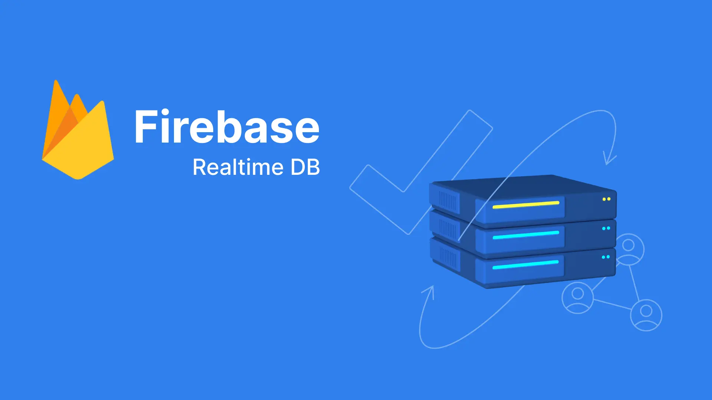

Firebase Realtime Database
I. Overview
Firebase Realtime Database plays a crucial role in providing a flexible and powerful solution for storing and synchronizing real-time data. Firebase Realtime Database uses a real-time model, allowing data to be synchronized immediately when changes occur.
Data in Firebase Realtime Database is stored in JSON format, creating a flexible and readable structure.
II. Compare with Firebase Firestore
Firebase offers two cloud-based, client-accessible document databases. We recommend new customers start with Cloud Firestore:
- Cloud Firestore is the recommended enterprise-grade JSON-compatible document database, trusted by more than 250,000 developers. It's suitable for applications with rich data models requiring queryability, scalability, and high availability. It also offers low latency client synchronization and offline data access.
- Realtime Database is the classic Firebase JSON database. It's suitable for applications with simple data models requiring simple lookups and low-latency synchronization with limited scalability.
Data model
Both Realtime Database and Cloud Firestore are NoSQL Databases.
| Cloud Firestore | Realtime Database |
| Stores data as collections of documents.Simple data is easy to store in documents, which are very similar to JSON.Complex, hierarchical data is easier to organize at scale, using subcollections within documents.Requires less denormalization and data flattening. | Stores data as one large JSON tree.Simple data is very easy to store.Complex, hierarchical data is harder to organize at scale. |
In addition, there are many comparison factors that the Firebase homepage provides and recommends using Firestore. You can find more details at: https://firebase.google.com/docs/database/rtdb-vs-firestore
III. Pricing
The cost of using Firebase Realtime Database is calculated based on several key factors. Here are some important points you should know:
Storage:
- The cost is calculated based on the amount of data you store in Firebase Realtime Database. The price increases with the amount of stored data.
Read and Write Operations:
- Each time you read or write data, Firebase counts an operation. The cost is calculated based on the number of these operations. There is a difference in cost between read operations and write operations.
Realtime:
- Firebase Realtime Database provides real-time synchronization capability. Using this feature may impact the cost due to the increased number of times data is synchronized in real-time.
Geo-location:
- The pricing can vary depending on the geographical region where you are using Firebase Realtime Database.
Network Service Tiers:
- Firebase offers various types of network services with different prices. The cost can vary depending on the type of network service you choose.
Volume Discounts:
- If you have a large amount of data and operations, there may be scale-based discount programs available.
IV. Demo
Create database

Temporarily setting "allow read" and "write" to true allows for reading and writing.

Go to Project Settings, download the google-service.json file, and copy the GoogleService-Info.plist file into the project.
Add lib:
- flutter pub add firebase_database
Write:

Results on console:

Read: